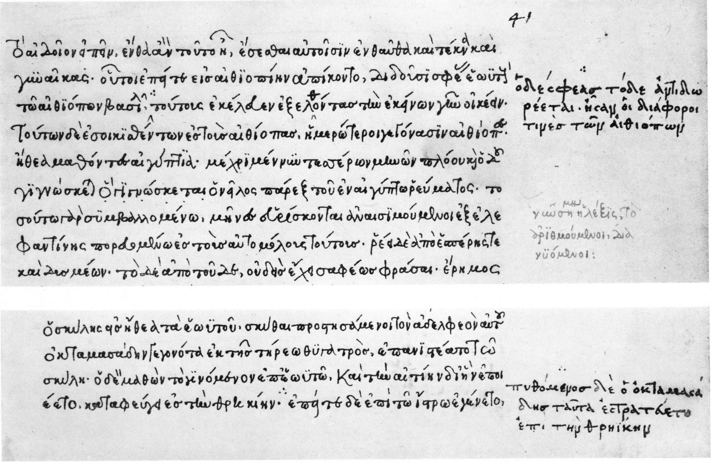

Unit 5 · Historical investigation · Lesson 16
Final checks: proof-reading, integrity and reflection
How do you check a finished report, show that it is your own work, and explain how and why your thinking changed?
Year 11 Ancient History · Present with → or space · Read on a phone with R

Connect · 3 minutes · everyone writes one line · press K for the timer
Name one claim in your report, and the source that carries it
Choose one claim from your own report. Write it, then name the source that carries it, the way your citation will read.
“My claim is that … . The source that carries it is … (author, year).”
states a claim (a statement a source could support or challenge, not a topic) and names a source that really carries it, in the form of your citation. On our class question: “The town points to crews that the crown organised and fed (Ancient Egypt Research Associates n.d.).” If you cannot name the source, the claim is not ready.
Today you check a whole report. A reader asks the same two questions of every sentence:
- Who says so?
- Where can I find it?
Your citations, and the reference list behind them, answer both.
Learning intentions and success criteria · 2 minutes
Today’s goals
- proof-read and check an investigation report against criteria
- reflect on how our thinking changed during the investigation
- find and fix errors of tense, attribution and citation
- check my report against the final checklist
- explain how my hypothesis changed, naming the evidence that changed it
Syllabus outcomes: AH-11-07 communicates historical understanding, applying historical knowledge, terms and concepts · AH-11-08 plans and conducts historical investigations and presents conclusions, using evidence from a range of sources. Life Skills: AH-LS-12 participates in a historical investigation · AH-LS-11 communicates information about the past using historical terms and concepts.
Note-making · the routine for the whole course
How to structure your notes
questions and key terms, written after
short phrases, arrows (→ leads to), abbreviations (n.d. = no date; c. = about; BCE = Before the Common Era)
- 1A new lesson, a new pageA cue column about a quarter of the page wide; title and date at the top; room for a summary at the bottom.
- 2Listen and look, then writeDon’t copy while a slide is being explained. Phrases, not sentences.
- 3Write your own notes at the ✎ checkpointThen compare with the model notes, one row at a time. Add what you missed in a second colour.
- 4Write the cue questions afterwardsUse exam verbs: describe, explain, assess. To revise, cover your notes and answer the cues.
- 5Your marks and your reflection are separateNotes hold what you learn about final checks; your report, your log and your reflection hold your own work. One checkpoint today.
Key vocabulary · add to the unit word wall
Words for final checks, integrity and reflection
| Writing terms | Meaning |
|---|---|
| Proof-reading | Checking a final draft for errors of tense, attribution, citation, spelling and register. |
| Tense | Past tense for what happened; present tense for what a source or historian says. |
| Attribution | Saying who claims what, with a verb that shows how: reports, suggests, claims. |
| Register | How formal language is; a report uses a formal, impersonal register. |
| Final checklist | The checks you make on the whole report, and then on each section, before it is finished. |
| Research terms | Meaning |
|---|---|
| Authorised assistance | Help your teacher permits for a piece of work, which you must acknowledge. |
| Acknowledgement | A short statement of what help you used, for what purpose, and where the record is. |
| Version | A dated copy of your draft, saved as you work, so that the changes show. |
| Hypothesis | A provisional, testable answer to your question; research may confirm, modify or reject it. |
| Reflection | Looking back at how and why your thinking changed, and naming the evidence that changed it. |
1 · I do · the final checklist · 2 minutes · then cold call
The final checklist: the whole report, then each section
- Question answered, at your thesis’s degree
- Sources synthesised: two or more in each section
- Every claim cited (author–date)
- Reference list complete and consistent, both ways
- Hedges matched to the evidence
- Formal register: impersonal and precise
- Headings: claims, in the order of your sub-questions
Cold call: a report cites (Tallet and Marouard 2014), but its list has no entry for it. Which check fails, and what do you do?
Check 4, the reference list. A citation with no entry cannot be traced. Add the entry, or, if you never read the source, remove the citation and the claim it carried.
- JJudge: answers the sub-question with a degree (largely, partly) and one hedge.
- EvEvidence: two or more sources, each named, attributed with an accurate verb and cited (author–date).
- AAnalyse: says what the sources show together, with a precise verb (suggests, indicates), never proves.
- EvlEvaluate: names what the evidence cannot show (a gap, a later date, one team, sources that are not independent).
- RResolve: a refined judgement at the same degree, with no new evidence.
- OOwn words: paraphrase, not patchwriting; present tense for what sources say, past tense for what happened.
1 · I do · why the log, notes and versions matter · 1½ minutes · then cold call
Your log, notes and versions show how you worked
What you searched, found, rejected and decided, in order (Lesson 3).
Your own words, with a citation beside each one (Lesson 5).
Dated drafts, each saved as it was: your section draft, your rewrite sheet and today’s proof-read copy.
Your report shows what you concluded. What does your log show that your report does not?
How you worked: what you searched, found and rejected; what you decided and why, including any permitted help you used; and how your thinking changed. Together with your notes and versions, that is the evidence that the work is your own.
Other people deserve to be recognised for their own work.
NESA, HSC: All My Own Work, Topic 2, 2.1 · NESA’s course on academic integrity
- Keep all three, up to date, as your teacher directs.
- Save a new dated copy when you make a big change. Don’t overwrite the old one.
- Write each log entry when you do the work, not afterwards.
1 · I do · declaring permitted help · 1½ minutes · then cold call
When your teacher permits help, acknowledge it like this
- Use only the help your teacher permits, for the purpose they permit. If you are not sure, ask first.
- Record it in your log: who or what, the date, the purpose, your exact prompt (for a tool), what you kept and what you rejected.
- Declare it in a short acknowledgement.
- An AI chatbot is not a source: it can invent facts and references (Lesson 3). Check everything it gives you. AI never writes, paraphrases or summarises for you.
If you are allowed to use generative AI, you must acknowledge it just like any other source you use in your work.
NESA, HSC: All My Own Work, Topic 1 · ‘What about AI?’
I used [tool, version] on [date] for [the purpose my teacher permitted]. My exact prompt, its output and what I kept are in my research log. I checked [what I checked] in [a real source]. [The tool] did not write, paraphrase or summarise any part of my report.
Help from a person, such as a teacher-librarian, is declared the same way: who, when and what they helped with. If you used no permitted help, you have nothing to declare.
A student’s whole acknowledgement reads ‘AI helped me.’ What is missing?
The tool and version, the date, the purpose (and that it was permitted), where the record is (the log), what was checked, and what the tool did not do. A reader should be able to see exactly what help was used, and for what.
Notes checkpoint · 1 minute · write your own notes first
Final checks and integrity
2 · Proof-reading · Writing focus · 6 minutes · I do → We do → apply · on the class question
Writing focus: three checks on every sentence
… he compelled all the Egyptians to work for him. … They worked in gangs of a hundred thousand men, each gang for three months.
Herodotus, Histories 2.124, A. D. Godley’s translation (Loeb, 1920–22), as revised by the Perseus Digital Library · the passage opens ‘They said’: he reports what Egyptians told him
Herodotus said the pyramid was built by 100,000 slaves (Wikipedia).
Three checks, in this order: tense · attribution · citation. Who says it, in whose words, and where did I read it?
Past tense for what happened; present tense for what a source says. Name who claims what, and quote only the words of the text you read. Cite the passage you read.
Frame: ‘[Source] reports that … (citation).’
After · the same sentence, proof-read · written for this lesson
Herodotus reports that Khufu “compelled all the Egyptians to work for him”, in gangs of 100,000 men, each serving three months (Herodotus 2.124).
Tense: said → reports: present for what a source says
Attribution: the translation’s exact words, in marks: the passage never says slaves. Compelled is Godley’s word: the Greek verb means ordered (Lesson 5)
Attribution: 100,000 is the size of each gang, and each gang served three months
Citation: the passage I read, not Wikipedia, which is only a lead (Lesson 4)
2 · Proof-reading · Writing focus · We do · 2 minutes · on the Assyrian practice question · then cold call
We do: correct a second sentence with the three checks
… which suggests that … megadroughts during the early-mid seventh century BCE, as severe as recent droughts in the region but lasting for decades, triggered a decline in Assyria’s agrarian productivity and thus contributed to its eventual political and economic collapse.
A. Sinha et al. (2019), ‘Role of climate in the rise and fall of the Neo-Assyrian Empire’, Science Advances 5(11), abstract · the practice question: why did the Assyrian Empire collapse?
Correct this faulty sentence. Say it before you write it.
Sinha et al. said that drought destroyed Assyria (Science Advances).
Start with the authors, ‘Sinha et al. (2019) … that …’, and choose a verb that fits what an abstract suggests. Then say only what they say.
- Tense: an event, or what a source says?
- Attribution: who says it, as strongly as they do?
- Citation: the author and year that I read?
Sinha et al. (2019) suggest that decades of drought in the early to mid 7th century BCE cut Assyria’s farm output and so contributed to its collapse.
- Tense: said → suggest: present for what a source says; et al. takes a plural verb
- Attribution: destroyed claims more than the authors do: they suggest that drought cut farm output, which contributed to the collapse
- Citation: the authors and the year, Sinha et al. (2019), not the journal’s name
2 · Proof-reading · Writing focus apply · 2 minutes, alone · then the card stays with you for the conferences
The proof-reading card: your own report, one check at a time
Take the first paragraph of your own report. Read it four times, once for each check, and write the letter in the margin at each error: T tense · A attribution · C citation · R register. Fix at least one. Your Writing toolkit (booklet pages 3–4): the tense and voice rule.
| Check | Ask | Fix | Before → after · invented, written for this lesson |
|---|---|---|---|
| TTense | Is this an event, or what a source or historian says? | Past for what happened; present for what a source says, argues or shows. | The Ministry of Tourism and Antiquities (Egypt) (n.d.) read the animal bones from the town as a sign that the state keeps its workers healthy. → The Ministry of Tourism and Antiquities (Egypt) (n.d.) reads the animal bones from the town as a sign that the state kept its workers healthy. |
| AAttribution | Who says it, in whose words, and as strongly as the source? | Name the source; choose a verb that fits (reports, suggests, claims); keep its hedge; quote only its own words. | AERA proves the crown fed its crews. → Excavators at Heit el-Ghurab found bakeries, kitchens and workshops in the builders’ town, which suggests that the crown fed and equipped its crews (Ancient Egypt Research Associates n.d.). |
| CCitation | Is every claim cited with the author I read, and does the citation match an entry in my list? | Author–date where the claim is used; an ancient text by author, book and chapter; add or correct the entry. | (Perseus) names where it was read, not who wrote it → (Herodotus 2.124) |
| RRegister | Does it sound like a report? | Formal, impersonal and precise: no I think, kind of or stuff. (Your log keeps its I.) | I think the town is kind of good evidence that they got fed. → The town points to crews that the crown organised and fed (Ancient Egypt Research Associates n.d.), although it may belong mainly to later kings (Ministry of Tourism and Antiquities (Egypt) n.d.). |
Also read it aloud once for spelling and names. Still use Unit 4’s sentence checks: combine (because · but · so) · rename · name the agent.
2 · Proof-reading · Proof-read conferences · 25 minutes · pairs with the card · press K, click 20, then Start; at 0:00 click 5, then Start
Proof-read each other’s reports, then fix your own and complete your log
- 0–9Round 1. Partner A’s report: B marks it with the card for 5 minutes while A starts the log; then you talk for 3 (the conversation card).
- 9–18Round 2. Partner B’s report: swap roles. Same steps.
- 18–25Your own report. Fix what the marks found. Complete your log.
- The reader reads the report once for sense, then marks with the card: T · A · C · R in the margin at each error. Mark; don’t rewrite.
- Talk for 3 minutes. The writer says what each mark shows. The reader asks one open question, such as ‘What does suggests claim that proves would not?’
- The writer decides what to change. Your report stays your own work: only you change your words.
About 2 minutes, with your teacher. Read one sentence you fixed, say which check it fixes, and show your log, notes and drafts.
- My searches, and the sources I found, kept and rejected, with dates.
- My decisions and the reasons for them, including any change of mind.
- Any help my teacher permitted: what, when and why; my exact prompt for a tool; what I kept; my acknowledgement.
- My versions: dated drafts, saved as they were.
Mark one check at a time: read once for tense only, then again for attribution, then citation, then register.
3 · Reflect · 10 minutes · your Lesson 2 proposal comes back · press K, click 8, then Start as you begin writing
How and why did my hypothesis change?
- Your hypothesis in your Lesson 2 proposal.
- Your conclusion in your report, now.
- Your log: the entry where the evidence moved you.
How and why did my answer change? Name the evidence that changed it.
Deconstruct it: How and why (what changed, and the evidence that changed it) · topic: your answer to your own question · limits: Lesson 2 to now · do: one paragraph, then → now, with a named source.
Past tense for what you thought then; present tense for what a source shows and what you conclude now.
“My hypothesis was that … . My conclusion now is that … . The source that changed my mind most was … (author, year), which shows that … . It changed my answer because … .”
Did your answer stay the same? Then name the evidence that made you surer of it.
Reflect on method: which search, source or conversation most improved your investigation, and what would you do first next time?
quotes your first hypothesis; states your conclusion now, with a degree and one hedge; names at least one source (author, year) and what it showed you; says what kind of change it was (confirmed, modified or rejected); and says why: a new source, a better source, or a limit you found. If your answer stayed the same, say which evidence made you surer.
Exit ticket · 8 minutes · before you leave
My hypothesis, my conclusion, and the source that changed my mind
“My hypothesis was … ; my conclusion is … ; the source that changed my mind most was … because … .”
Then check yourself against today’s three “I can” statements, and hand in your log with your ticket.
- I can find and fix errors of tense, attribution and citation.
- I can check my report against the final checklist.
- I can explain how my hypothesis changed, naming the evidence that changed it.
your hypothesis as you first wrote it; your conclusion now, with a degree and one hedge; a named source (author, year) and a reason in the evidence, not in a feeling: because it showed …, not because I liked it. Tense: was for what you thought; is for what you conclude.
Next unit: Features of ancient societies: slavery in ancient Rome.
Finish your notes If time · or at home
Summary: three sentences on final checks
- What does the final checklist check?
- How do you show that your report is your own work, and how do you declare permitted help?
- What are the three proof-reading checks, and what does each ask?
The final checklist checks the whole report first (the question answered, sources synthesised, every claim cited, a complete and consistent reference list, hedges matched to the evidence, a formal register and claim headings) and then each section against the six points J · Ev · A · Evl · R · O. My log, notes and dated versions show how I worked, and when my teacher permits help I use it only for that purpose, record it in my log and acknowledge it, saying what the help was, when, why and where the record is. Proof-reading asks three questions of every sentence: tense (past for what happened, present for what a source says), attribution (who says it, in whose words, as strongly as the source) and citation (the author and year, or the passage, that I actually read).
Practice and review · 1 of 3 · homework or revision · true, false, justify
True or false? Justify your answer
- 1When you write about what a source says, present tense is usually right; when you write about what happened, past tense is. True — ‘Herodotus reports …’ but ‘Khufu reigned …’: the source speaks now, the events are over.
- 2Citing (Perseus) for a passage of Herodotus that you read there is the correct author–date citation. False — Perseus is where you read it, not who wrote it. Cite the author, book and chapter, (Herodotus 2.124), and list the translation in your reference list.
- 3If your teacher permits help for a purpose and you use it, NESA says you still have to acknowledge it. True — NESA says permitted AI must be acknowledged “just like any other source you use in your work”, and counts using “any outside assistance without proper acknowledgement” as plagiarism. Say what, when, why and where the record is.
- 4Once your report is finished, your log and notes have done their job and can be thrown away. False — they are the evidence of how you worked. Keep them, with your dated versions, as your teacher directs.
- 5When you proof-read a partner’s report, you should rewrite the sentences you think are wrong. False — you mark and talk; only the writer changes the words, so the report stays their own work.
- 6A reflection that says your hypothesis did not change cannot be a good one. False — if your answer stayed, name the evidence that made you surer. An honest reflection names the evidence either way.
Practice and review · 2 of 3 · homework or revision · writing
Proof-read a sentence and fix an acknowledgement
The question is the closed practice question, Why did the Assyrian Empire collapse in the late 7th century BCE? An invented student sentence reads:
The chronicle said that Nineveh was captured by the Medes in 612 BCE (Google).
Name one error for each check (tense, attribution, citation) and rewrite the sentence. The source is Livius.org’s page for ABC 3, the Fall of Nineveh Chronicle, which Livius.org last changed in 2020.
The Babylonian chronicle records that the Babylonians and the Medes besieged Nineveh for three months in 612 BCE (Livius.org 2020).
Tense: said → records. Attribution: the chronicle has the king of Akkad (Babylonia) and the king of the Medes besiege the city together, not the Medes alone. Citation: (Google) is a search engine; cite the page you read, (Livius.org 2020).
An invented student writes ‘AI helped me with the research.’ The log shows: Chatbot X (version 4), used on [date] only to suggest search terms, as the teacher permitted; the exact prompt, its output and two terms kept are recorded; both terms were tested in Google Scholar. Rewrite the acknowledgement so a reader can see exactly what help was used.
I used Chatbot X (version 4) on [date] only to suggest search terms, as my teacher permitted. My exact prompt, its output and the two terms I kept are in my research log, and I tested each kept term in Google Scholar. The chatbot did not write, paraphrase or summarise any part of my report.
Practice and review · 3 of 3 · homework or revision · cover your notes and answer from memory
Quick checks
- Describe what proof-reading checks. A final draft for errors of tense, attribution, citation, spelling and register.
- Explain the rule for tense when you write about sources. Past tense for what happened; present tense for what a source or historian says, argues or shows: Herodotus reports, Sinha et al. suggest.
- Why is (Perseus) a faulty citation of Herodotus, and what should it be? Perseus is where you read it, not who wrote it. Cite the author, book and chapter: (Herodotus 2.124), with the translation in the reference list.
- Why keep a log, notes and dated versions? They show how you worked (what you searched, found, rejected and decided) and are the evidence that the thinking is yours.
- What must an acknowledgement of permitted help say? What help (tool and version, or person), when, for what permitted purpose, where the record is, what you checked, and what the tool did not do.
- What are the three kinds of change a hypothesis can show, and what must a reflection name? Confirmed, modified or rejected (Lesson 2). It names the evidence that changed it (a source, author and year) and why.
Sources and credits
Where everything comes from
Herodotus, Histories 2.124: A. D. Godley’s translation (Loeb, 1920–22), as revised by the Perseus Digital Library (CC BY-SA 3.0 US). A. Sinha et al., “Role of climate in the rise and fall of the Neo-Assyrian Empire”, Science Advances 5(11) (2019), doi:10.1126/sciadv.aax6656 (open access; the abstract is quoted briefly). NSW Education Standards Authority (NESA), HSC: All My Own Work, Topic 1 (PDF) and Topic 2 (PDF), © NESA, quoted briefly.
Facts: Ancient Egypt Research Associates, “The Lost City of the Pyramids (Heit el-Ghurab)”; Egypt’s Ministry of Tourism and Antiquities, “Workers’ Town and Cemetery”; Livius.org, “ABC 3 (Fall of Nineveh Chronicle)”; P. Tallet and G. Marouard, “The Harbor of Khufu on the Red Sea Coast at Wadi al-Jarf, Egypt”, Near Eastern Archaeology 77(1) (2014), doi:10.5615/neareastarch.77.1.0004. Wikipedia appears only as a faulty citation in one invented sentence. NSW Department of Education, Writing in Secondary (the Writing conversations guide: Proof-read, Copy). The faulty sentences, corrections, examples, frames, exercises and models are invented or written for this lesson. Every page was checked on 27 November 2026.
Outcomes and content: NSW Education Standards Authority (NESA), Ancient History 11–12 Syllabus (2024). © NESA.
- Herodotus’s Histories in Greek: parts of two pages of a 15th-century manuscript with words written in the margins (Vatican Library, Vat. gr. 122) · Biblioteca Apostolica Vaticana, Vat. gr. 122 (reproduction on Wikimedia Commons) · Public domain · source

All images are public domain or openly licensed, and were resized or cropped for the web. Each is shared under the licence shown.